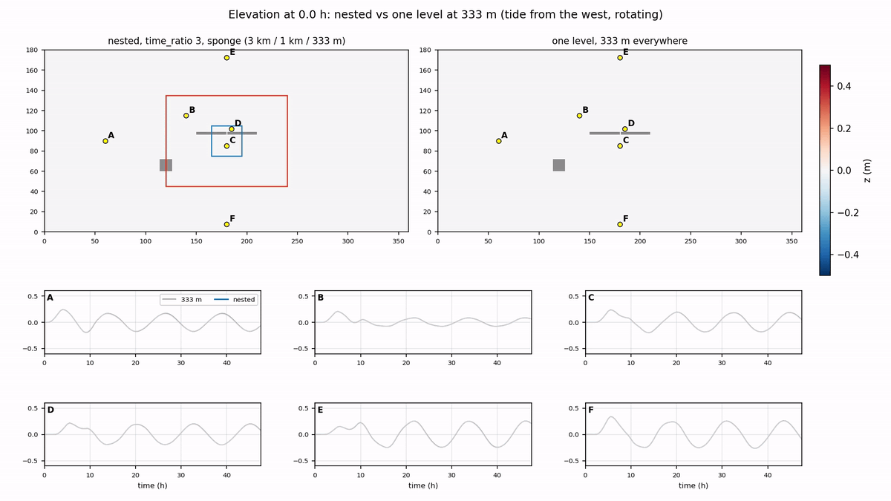

Under development · updated 3 November 2026
IDEAL: three nested levels with known answers
A Cartesian channel with an analytic depth and three nested pyGETM levels, 3 km, 1 km and 333 m, with every feature of the nesting placed on purpose. It is where the two-way nesting for pyGETM is tested before it goes into the realistic setups NEAB and DKm. Runs take minutes on a few cores.
- levels
- 3
- volume conserved
- 2e-16
- heat conserved
- 1e-9
- layers
- 10 / 15 / 20
3 km → 1 km → 333 m
relative, 2D
relative, 3D, 48 h
a different number per level
A channel, a shelf and a strait
The root is a channel of 360 × 180 km at 3 km, with an open (Flather), closed or periodic boundary at each end and an M2 tide of 0.5 m at the open one. The shelf level (1 km, ratio 3, time ratio 1) nests in its middle, the strait level (333 m, ratio 3, time ratio 3) in the shelf. Planted features:
- An island across the shelf's west interface: the interface runs through land.
- An active region bounded by a barrier: the shelf's north-east corner stays with the channel, so that interface is not on the window's edge.
- A wall with a 1 km gap: open in the shelf (1 cell) and the strait level (3 cells), closed in the channel, as the Little Belt in NEAB.
Depth and land of the three levels; the shelf's window and active region (red), the strait level's (blue).
Each level is an ordinary pyGETM model (IDEAL/models/<level>/run.py), launched as one MPMD component.
The nesting (pygetm.nesting on the fork bolding/pygetm) fills the halo zones where the levels overlap
and matches the fluxes through the faces between them. How it works is described on the
nesting page.
The barotropic experiments
| Experiment | Result | |
|---|---|---|
| E1 | Sea at rest, 12 h | passed: elevation exactly 0 in every level |
| E2 | Volume conservation, a 0.5 m bump in a closed basin | passed: 2e-16 relative; found an instability (below) |
| E3 | Tide against one level at 333 m everywhere | nested within 0.4–2.6 cm (tidal range 21–34 cm) |
| E8 | Independent of the process split | passed for 1/1/1, 2/3/2, 1/2/1, 1/1/2 processes; one tile layout differs by 1e-4 m |
| E9 | Time per model | measured: compute, nesting work, transfer, wait |
An instability: a sub-stepping child with flux matching
With the volume conserved to round-off, the strait level still grew to 23 m within 12 h. Switching parts off showed what triggers it:
- the flux matching (the parent's elevation correction next to the interface),
- together with a child that sub-steps (time ratio 3),
- under a parent stepping well above the child's step: the growth rises with the parent's Courant number.
Two levels are enough; neither tidal forcing nor friction removes it. A 1D model of the same coupling
(IDEAL/scripts/coupling1d.py) reproduces it: growth factors per parent step of 1.013 at the 2D runs'
Courant number 0.57 and 1.12 at 0.9. The unstable mode lives in the child, a few cells wide, and changes sign
every 1–2 parent steps. Short waves the parent cannot represent are pumped by the loop: flux mismatch → correction
of the parent cell outside the window → the child's ring.
A Gaussian bump in a closed basin: the strait level's max |z| in the instability runs.
Unstable (time ratio 3) against stable (time ratio 1): a mode of a few cells over the whole level.
The fix: an AGRIF-like sponge
AGRIF (Debreu et al. 2012) damps the fine grid's boundary zone with a sponge. The same works here with all
models stepping at the same time: the child's transports are damped next to the interface through pyGETM's
horizontal viscosity (momentum.An, land-aware). It acts on momentum only, so the volume stays exactly
conserved. An apparent limit of α = 0.02 turned out to be a pyGETM bug (the damping was applied with the time step
twice, fixed on the fork). The sponge is stable for α = 0.03–0.2, default 0.1.
Strait level, max |z|, M2 tide with a 3 h ramp.
Without it the strait level fills with short waves that radiate into the shelf; with a sponge one parent cell wide the field is smooth across both interfaces.
Nested against one level at 333 m everywhere
Each level over the cells it computes. The tide crosses the interfaces without jumps. With rotation it travels as a Kelvin wave along the southern wall, reflects at the closed east end and returns along the northern wall.
Solid: nested, time ratio 3 with the sponge; dashed: time ratio 1; dotted: one level at 333 m everywhere. Time ratio 1 is within 0.4–1.0 cm everywhere; time ratio 3 within 0.7–0.9 cm on the shelf and in the strait, 2.2–2.6 cm in the channel, which steps at 18 s instead of 6 s.

Left: nested (3 km / 1 km in the red box / 333 m in the blue box). Right: one level at 333 m. Below: the stations.
Bit-identical for 1/1/1, 2/3/2, 1/2/1 and 1/1/2 processes. With the channel on 3 processes its tile edges fall on the shelf window's edges and the results differ by 1e-4 m: still open.
compute: the model's own step; work: restriction, flux matching, ring values; transfer: receiving data; wait: blocked until the partner's data is there.
Temperature, with a different number of layers per level
The same three levels in 3D: baroclinic, with temperature and constant salinity, and sigma layers of their own in each level (channel 10, shelf 15, strait 20). The levels' layers do not line up, so every exchange of a profile goes through a conservative vertical remap.
All levels share the 3D time step (181 s): a child's split factor is its parent's times its time ratio, so every
3D step is a sync. At each sync (pygetm.nesting.baroclinic.NestedTracers3D):
- Rim (child → parent): the 3 × 3 child columns of each parent rim cell are remapped onto the parent's layers (the upper 80 % of the column unstretched, the rest stretched to the parent's depth), with concentrations by the volume each parent layer receives. A uniform field stays uniform.
- Ring (parent → child): the parent's column, remapped onto the child's layers in each ring cell; and the parent's layer transports at the faces around the ring, remapped onto the child's face layers and shifted to the child's own column total.
- 3D transports at the interface (child → parent): the child's layer transports through its edge faces replace the parent's at the window faces, before the parent advects, so both move the same water through every layer.
- 3D flux register (child → parent): the tracer amounts through the child's edge faces over the 3D step, remapped onto the parent's face layers; the parent cell next to each face is corrected layer by layer.
The initial state is at rest with a pycnocline that deepens from 10 m in the west to 25 m in the east, so the sloping isopycnals adjust and drive flow across the interfaces, plus the tide at the open west end.
| Test (48 h unless noted) | Result |
|---|---|
| uniform temperature, tide, full coupling (12 h) | T = 12 °C to 3e-13 in all levels |
| closed basin, no 3D coupling | heat content of all levels, max change 9e-6 |
| closed basin, rim and ring only | 2.5e-5 |
| closed basin, full coupling | 1.2e-9 |
| sloping pycnocline, tide, without the sponge | the strait level blows up at 11 h, with or without 3D coupling: the 2D instability above |
| sloping pycnocline, tide, sponge, full coupling | stable; the pycnocline continuous across both interfaces |
A west–east section at y = 90 km, each level over the cells it computes, with its own layers (5 m, 3.3 m and 2.5 m): at the start and after 48 h with the full coupling, with rim and ring only, and without 3D coupling.
Depth of the 12 °C isotherm: continuous across both interfaces.
All levels over the cells each computes. With the 3D transports and the flux register the change is 1e-9; with rim and ring only it is 2.5e-5.
Two findings on the way
- The column volume was 10 % off. pyGETM sums the 2D transports over the 3D step for the 3D momentum before the 2D coupler replaces them at the window faces. The parent's 3D volume through the interface therefore differed from the child's by about 10 %. The 2D coupler now adds its replacement to that sum; the difference is 1e-4.
- The layer profiles differ. The child, with more layers, resolves a jet at the pycnocline that the parent does not. A per-layer tracer correction without the matching water made a uniform field 15 °C non-uniform. That is why the parent takes the child's layer transports at the interface.
3D velocities in the child's ring
The child's ring faces are set by the coupling, not computed by the child. In 3D the child first filled them with its own layer profile, shifted to the ring's 2D transport. Now it takes the parent's layer transports there: the two parent faces around each ring face (linear across, constant along, as in 2D), remapped onto the child's face layers and shifted to the child's column total. They are set at the child's 3D momentum step and held over the 3D step. The jump of the 3D velocity between a ring face and the child's first interior face, relative to the interior velocity, over the 48 h tidal run:
| Interface | child's own profile | the parent's profile |
|---|---|---|
| shelf, west / east (u) | 0.12 / 0.12 | 0.06 / 0.06 |
| shelf, south / north (v) | 0.94 / 0.96 | 0.51 / 0.55 |
| strait, west / east (u) | 0.10 / 0.12 | 0.03 / 0.04 |
| strait, south / north (v) | 0.91 / 0.97 | 0.52 / 0.45 |
The across-channel velocity v is small, so its relative jumps are large. Heat stays conserved to 1e-9 and a uniform field uniform to 3e-13.
Where it stands
Done
- 2D: E1, E2, E3, E8, E9; the sub-stepping instability understood (1D model) and removed by the sponge.
- 3D: temperature and salinity between levels with different layers; rim, ring, 3D transports and the 3D flux register; heat conserved to 1e-9.
- 3D velocities in the child's ring from the parent.
Next
- A stratified lake at rest with a parent in sigma and a child in adaptive coordinates (V2).
- A pycnocline over the shelf slope: rim B″ against A (V5); a tracer front through the levels (V6).
- The cost of the 3D exchange per step (V7).
Open
- One tile layout in E8 (1e-4 m).
- Limited slopes and time interpolation in the 3D ring.
- The sponge for the 3D scalars, if needed.